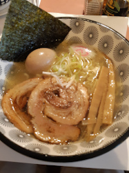

On this page are some of various interests that I have, specifically food, music, and some of my hobbies.
From my family background and my time at the university, I've been exposed to a variety of foods and listed
below are some of my favourties. Admittedly, I don't listen to usual music genres that much. Most of my
exposure to music comes from video games and being around my friends. Listed below this list are some of the
music genres I've enjoyed listening to. Finally, my hobbies contain a variety of activities I enjoy doing.
Before coming to the university, I enjoyed expressing myself in a variety of visual arts, such as painting
and photography. Since childhood, I've enjoyed playing video games and discovering the stories behind each
In coming to the university, I've enjoyed programming, and learned a couple of languages along the way. These
can all be found at the bottom of the page.

The three pictures in this section were taken by me
The four pictures in this section were created/edited by me. Alter ego picture is a screenshot I took ingame.